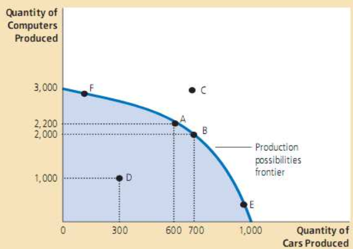
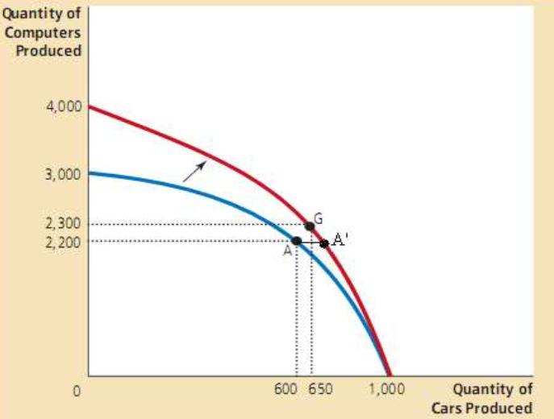
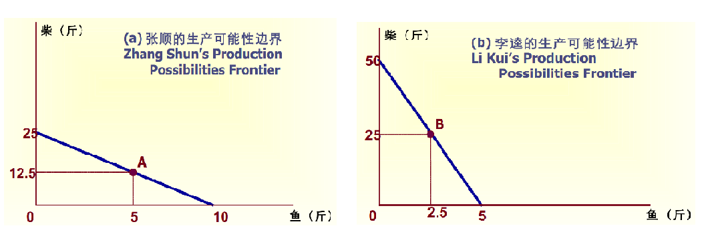
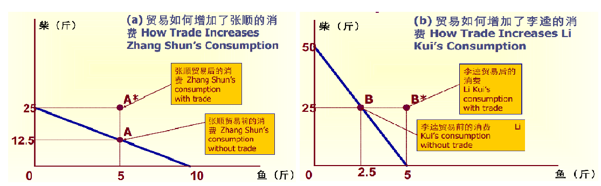
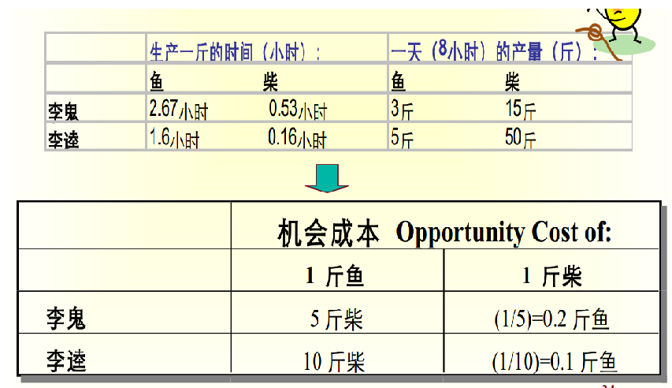

经济学原理
[TOC]
授课老师 / 经典著作
- 清华大学经管学院院长：钱颖一，02 年来到经管学院
- 经管学院副院长、党委副书记：钟笑寒
- 亚当斯密-《国富论》
- 大卫李嘉图-《政治经济学与赋税原理》
1. 什么是经济学
- 经济学界的诺贝尔奖：克拉克奖章
- 经济学，是一门研究选择的社会科学。
- 经济学三类问题，十大原理
- 人们怎么做决策（微观经济学）
- 人们面临得失交换（权衡取舍） People face tradeoff.
- 某物的成本是为此所放弃的东西（机会成本） The cost of something is what you give up to get it.
- 理性人思考边际量（边际成本） Rational people think at the margin.
- 人们会对激励做出反应（激励） People respond to incentives.
- 人们如何相互作用（微观经济学）
- 贸易能使人人受益（交换） Trade can make everyone better off.
- 市场通常是组织经济活动的好方式（市场） Markets are usually a good way to organize economic activity.
- 政府有时候可以改进市场结果（政府） Governments can sometimes improve market outcomes.
- 整体经济如何运行（宏观经济学）
- 一国的生活水平取决于它的生产（生产力） The standard of living depends on a country's production.
- 当政府发行了过多的货币时，物价上涨（货币） Prices rise when the government prints too much money.
- 社会面临通货膨胀和失业之间的短期得失交换（通胀与失业） Society faces a short-run tradeoff between inflation and unemployment.
- 人们怎么做决策（微观经济学）
权衡取舍 tradeoff
天下没有免费的午餐，有得就有失。时间成本。
机会成本 opportunity cost
机会成本是指在面临多方案择一决策时，被舍弃的选项中的最高价值者是本次决策的机会成本。 简单来说，某物的机会成本是为了得到它而放弃的东西。
每当我们做了一个选择，我们就放弃了其他的选择。
权衡利弊得失，时间成本，选择了国企，那么我的机会成本是什么？如果选择另一个方案，会不会有更好的收益？比尔盖茨为什么退学？是因为上学的机会成本太高了。民工荒：打工的机会成本变高。
我为了考上研，放弃了太多的东西。
边际成本 marginal cost
边际成本是对已有行动计划的小的、增量微调。
动态的思维，谁都要吃饭的，边际成本是多吃一口，少吃一口的问题。航空公司在乘客上完之后，允许员工的家属免费搭乘飞机。
李老师所作的那些“施舍”和虚伪的“关心”，实际上都是成本很低的边际成本。
激励机制 incentive
激励机制无处不在：消费券，奖学金，拼多多拼团优惠等。还有例如安全带激励司机开车不注意安全，使得受伤的行人增多；保险机制可能带来更多的风险，增加杠杆。
交换可以使得人人受益
交换也可以理解成交易，交流。交易可以使得人人受益；在交易中竞争也可以得到受益；交易可以促进人们的专业分工。
市场经济 market economic
看不见的手（invisible hand），价格，使得企业自己决定雇佣谁和生产什么，人们自己决定买什么和为谁工作。
政府的作用
罗斯福新政，金融危机。促进公平，税收，福利，医疗。
通货膨胀 inflation
整体物价水平的上升。注意，是整体！猪肉价格，水果价格上涨，都不是通货膨胀。长期的通货膨胀，大概率是货币货币导致的。
通货膨胀和失业率，政府向市场注入大量现金 ——> 人们手里有了更多的钱开始消费 ——> 企业招聘更多的工人生产 ——> 失业率下降。（四万亿的作用）
编外：经济学名词
我的思考
这门课用的是曼昆的经济学教材，学习的是西方的经济学，很多情况下，并不能解释国内的一些现状，国内更讲政治。
基准利率
基准利率就是一个市场上利率水平的风向标。各个金融机构，都根据这个标准来确定自己的贷款和存款利率。央行提高或者降低基准利率，就意味着提高或者降低整个社会的利率水平。
美国在疫情期间的基准利率已经降到了 0%。
利率是资金的成本。利率低就说明资金便宜，你可以用非常低的价格借到钱。反过来，它也反映了社会的平均利润率。如果各种项目的利润率很高，而利率又很低，就会有更多的人去借钱，从而促使利率回升。
利率一降再降，恰恰说明了社会的平均利润率在不断下降。 通俗地说，就是可以赚钱的好项目，越来越难找了。
下面就是这件事对每个人的影响： 高回报项目的消失、利率的下降、经济增长的放缓，使得你很难有办法攒钱了。 你好不容易积攒了一点工资，却发现根本找不到高回报的投资途径，不管是银行存款、证券投资、项目投资，回报率都很低。
做空和做多
做空：不看好未来的业绩，高价卖股票，等股价跌了再买回来，著名的做空机构：浑水。
做多：看好未来的业绩，低价买股票，等股价高了再卖出去。
年报和季报
季报：所有的上市公司每一个季度都要交一份报告，Q1，Q2，Q3，Q4
四大会计事务所
- 普华永道（PwC）
- 德勤（DTT）
- 毕马威（KPMG）
- 安永（EY）
其中安永帮过瑞幸做过一次假账，在瑞幸被浑水做空实锤之后，不敢再为瑞幸背书了。
2. 像经济学家一样思考
- 经济学是一门社会科学，也是一门经验科学，有一套科学的研究方法，观察，获取数据，提出理论，验证
- 经济学的难点：很难获取数据，很难实证，例如 90 年代经济特区的实验，通常是做一个小样测试，或者做出假设，我的研究生毕业论文，就是假设一条微博的情感只有正负，假设越少越好，越简单越好，越抽象简单的理论，其解释的范围越广，便于理解。
- 冷门的、general 的问题，更值得去探索，不要盲目跟风
- 学会三种表达方式：说话、图形和数学，这不止是经济学的表达方式，任何严谨的表达都应该如此
- 生产要素：土地、劳动力和资本
生产可能性边界 / 边际收益递减 diminishing marginal returns
The Production Possibilities Frontier
生产可能性边界，表示的是经济能够生产出的产品组合。

假设，假设一个公司只生产汽车和电脑，并且只有有限的生产要素。（一个简单的假设）
那么该公司的生产组合只能是边界（边界效率最高）或者边界内部的组合。汽车和电脑互为彼此的机会成本。如果公司想要多生产几辆汽车，就要少生产几台电脑。关键在于，如果调配生产组合，形成生产利益的最大化。
假设所有的生产资源都用来生产汽车，那么最多能生产 1000 量汽车，但是这并不一定能最大化地利用资源，此处曲线的斜率越大，x 轴汽车生产数量的一点减少，能够带来 y 轴电脑生产数量的快速增长。这就是边际效益递减。同样的道理，一门科目，在及格线处想要提高一分很容易，但是如果 90 分再多考一份，就可能需要耗费比 60 分多得多的精力，这也是边际效益递减。考研也是如此，我们的精力是有限的，面对那么多的科目需要复习，没有必要在单科上追求完美，而是应该追求总分的最大化。
当制造电脑的技术进步后，曲线变成了：

我们可以看到，在制造电脑的数量不变的情况下，电脑的技术进步使得汽车的制造数量增加了。这也很好解释，制造电脑的技术在引入流水线后，原来需要 10 个人在生产线，现在可能只需要 5 个人就可以操作整个生产线，剩下的五个人则可以去制造汽车，从而使得汽车的制造数量增加，所以汽车和电脑的价格是相互影响的。同样的现象可以解释理发行业的价格，理发的技术进步较慢，但是其他行业的技术进步较快，从事理发的机会成本就变得越高，所以理发的价格也随之增加。
经济模型中的因果关系
最简单的因果关系：$y=f(x)$
x：外生变量，因，输入
y：内生变量，果，输出
被忽视的变量：x 增长，y 也增长，可能都是由 z 导致的。例如，打火机和癌症，都是由吸烟引起的。
反向因果关系：夫妇购买旅行车先于小孩的出生，小孩才是因。
计量经济学的精髓：从一堆数据中，寻找因果关系。
经济分析方法
考虑个人行为时
稀缺性 Scarcity ——> 机会成本 Opportunity cost ——> 得失交换 Tradeoff
例如，价格上升引起需求下降，价格上升，稀缺性变高，机会成本就上升
考虑多人决策相互作用时
均衡 ——> 效率？——> 双赢。最大熵算法。
应用于其他学科
出发点：资源的稀缺性和人的行为动机的自利性
着眼点：经济人相互作用的效率结果
政府中的经济学家
中国：党中央-中央财经领导小组办公室，各部委，国务院政策研究室，国务院发展研究中心，中国社科院
美国：国家经济事务顾问，总统经济顾问委员会，美联储
3. 经济的相互依存性和贸易的好处
为什么要进行交易
经济学源于生活。
为什么要进行交易？一个具体的例子：张顺和李逵
李逵擅长砍柴，张顺擅长捕鱼，以前两个人都是半天捕鱼，半天砍柴，自给自足，每天张顺获得 5 斤鱼，12.5 斤柴，李逵获得 2.5 斤鱼，25 斤柴。

后来两人合作，一人负责打鱼，一人负责砍柴，然后分别拿半天的收益相互交换：

最后每个人获取到的结果是：张顺获得的鱼没变，柴翻倍，李逵获得的柴没变，鱼翻倍。两个人都过上了更幸福的生活。
每个人都生产自己最擅长的产品，然后进行交易，就会共赢。
人与人交往也是如此，多和人交流，多交易，才能共赢。
比较优势与绝对优势
如何从理论上解释这种现象？
为了增加总产量，应该让生产该商品机会成本更小的生产者来更多地生产它。专业地人干专业的事。那么经济的总产量就增加了。
比较优势原理（机会成本）：每个人各自生产他们具有比较优势的产品、然后进行交易，那么 他们的情况都会变好。
度量生产成本差异有两种方法：
- 比较优势：为了一种产品而放弃另一种产品的机会成本
- 绝对优势：生产单位产品所需要的时间成本（错误的度量方法）
绝对优势错在哪里？

李逵一天的产量不管是鱼还是柴的单位时间成本都比李鬼高，但是按照机会成本来算的话，其打鱼的机会成本太高了，还不如向李鬼买鱼划算。相同的例子：
- 教授打字打得既快又好，但是其打字的机会成本就高于他的秘书
- 老虎伍兹打高尔夫球打得很好，修剪草坪也修得很好，但是不如交给邻居家的小孩干
- 大学的目的就是发现自己的比较优势
所以，比较优势决定了贸易和分工。样样比别人强，样样自己干，从经济学上讲，并不一定是正确的。
4. 供给与需求
供给与需求是经济学家最常用的两个术语。
买方决定需求；卖方决定供给；买方和卖方共同决定市场结果。
需求-消费者
需求定律：其他条件不变，价格上升导致需求量下降。
消费者收入：收入增加，对正常商品的需求量会增加，对劣质品的需求量会减少。
替代品和互补品：新冠肺炎 ——> 医用口罩需求上升，其互补品的需求都会上升，例如普通口罩，消毒酒精，裹尸袋等，用联系的思想看问题。
供给-生产者
供给定律：其他条件不变，价格上升导致供给量增加。（什么赚钱种什么，卖家都是趋利的，也是盲目的）
市场类型
-
竞争市场
有众多买者和卖者的市场是竞争市场，价格空间比较小，很难操作；价格作为外生变量，不是个人所能操控的，买家和卖家都是价格接收者 price taker。
需求量是买者愿意而且能够购买的商品数量。
-
市场类型：垄断
Monopoly
只有一个卖者，卖家是价格操控者。
-
市场类型：寡头
Oligopoly
只有少数几个卖者。百事可乐与可口可乐；石油出口国。
供给与需求
- 如果石油价格上升是由于供给不足，则一定会引起 GDP 增长下降
- 如果较高的石油价格反映的是强劲的需求，那么它就是健康的全球增长的结果
房价上升了，但是需求依然火爆，这健康吗？不健康，因为中国的房价不是一个市场问题，是一个政治问题！
5. 弹性及其应用
弹性用来衡量买者和卖者对市场环境变化做出反映的程度大小。
价格变化引起的需求量的变化，更考虑边际。
给定百分之一的价格变化，需求量变化的百分数就是需求的价格弹性。
它衡量了一种物品的需求量对该物品价格变化作出反应的程度大小。
需求价格弹性的决定因素，以下的特征具有较大的价格弹性:
- 奢侈品
- 替代品数量越多
- 市场界定得越狭隘
- 时间间隔越长
价格弹性高：价格上升，需求大幅降低，总收益下降；
价格弹性低：价格下降，需求大幅下降，总收益上升。
刚需通常都缺乏弹性。例如粮食，水电，住房。我卖的专业课资料也是刚需，弹性很小